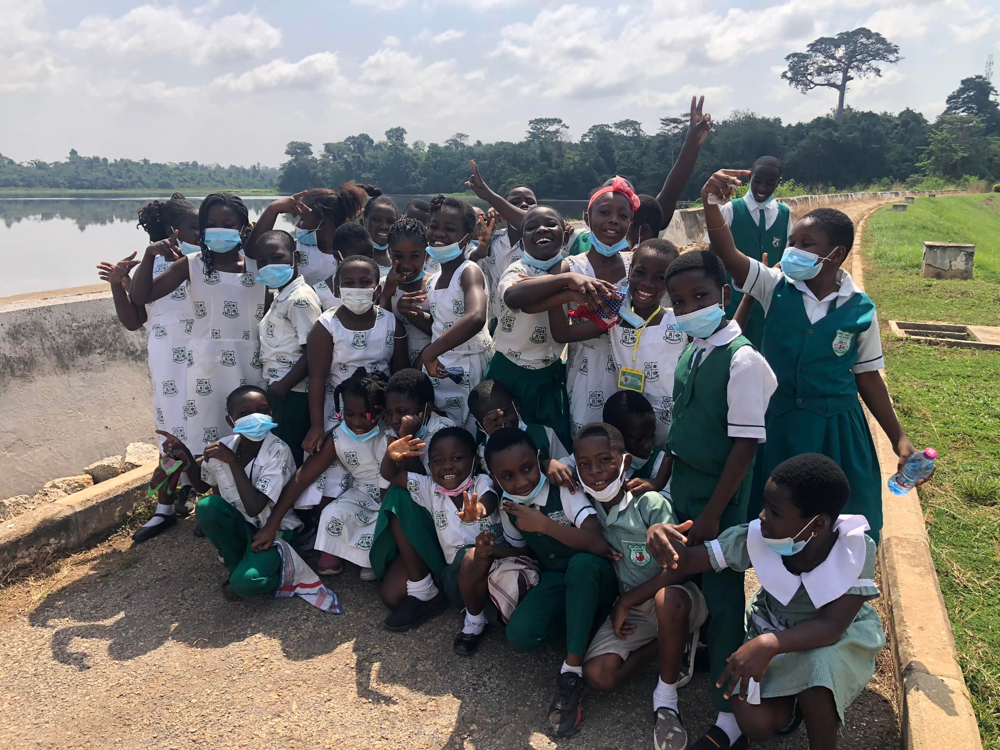

Academics
Learning at every stage.
Explore the school’s early years, primary and junior high programmes. Contact us for current class and subject details.
Our programmes
Choose a learning stage
A confident start
Early years
Early learning introduces children to classroom routines, communication, early literacy and numeracy. Ask the school which classes are currently available at each campus.
Ask about early years
Basic 1–6
Primary
Primary education builds core knowledge and learning habits. Contact us for the current class list, subject information and placement guidance.
Ask about primary
JHS 1–3
Junior high
Junior high continues learners’ basic education. Ask the school about current subjects, assessments and preparation for the next stage.
Ask about junior high
Learning areas
Subjects offered
Subject combinations vary by level. Ask the school for the current details.
Mathematics
English
Science
Computing
Creative arts
Social studies
Teaching and learning
A practical, caring approach
Good learning starts with clear teaching, regular practice and encouragement. The school can share how learning is organised in each class.
- Clear learning goals
- Practice and participation
- Supportive classroom routines
- Communication with families
Beyond lessons
Clubs and activities
Ask the school which activities are running this term.